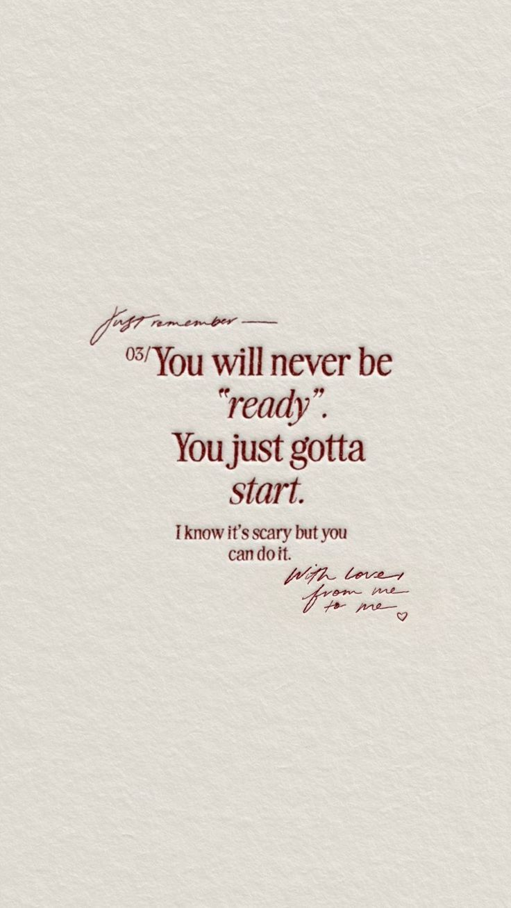
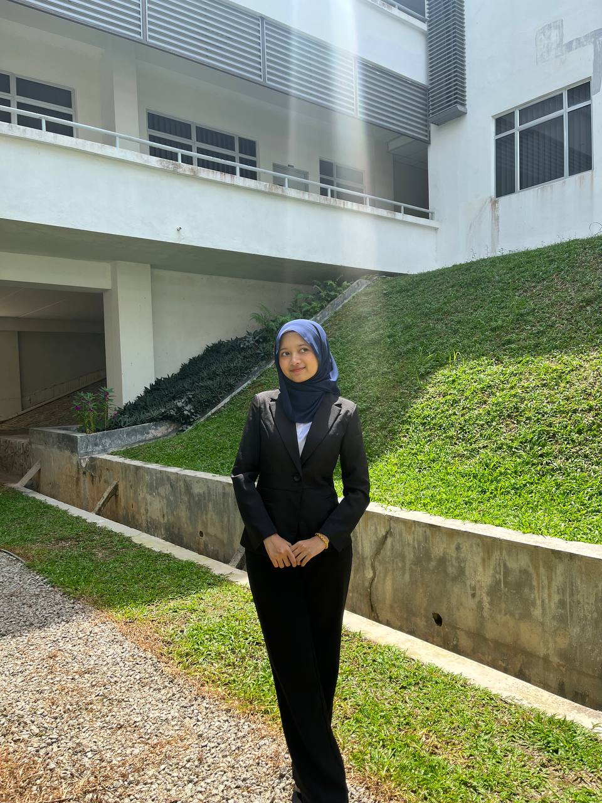

My Vision
I aspire to become a Data Scientist, with a strong interest in analyzing complex datasets to uncover meaningful insights, support data-driven decision making, and solve real-world problems efficiently and creatively using analytical and statistical approaches.

Hobby & Fun Facts
In my free time, I enjoy reading books, watching movies, and exploring new technologies, as they allow me to gain fresh perspectives and stay curious about innovation. These activities enhance my creativity, critical thinking, and adaptability, which positively influence how I approach problem-solving and continuous learning in both academic and professional environments.

Achievements & Awards
Recognized on the Dean’s List and actively involved in workshops, competitions, and volunteering activities, demonstrating strong academic excellence, versatility in various skill areas, and leadership through continuous participation and contribution.

Core Values / Motto
Creativity, curiosity, and continuous learning guide me to approach challenges innovatively and strive for excellence in everything I do.

Future Goals / Aspirations
I aim to contribute to innovative digital solutions in analytics, web development, and information management by applying data-driven approaches, analytical thinking, and technical skills to design efficient systems, support informed decision-making, and create meaningful solutions that address real-world challenges and drive positive impact.